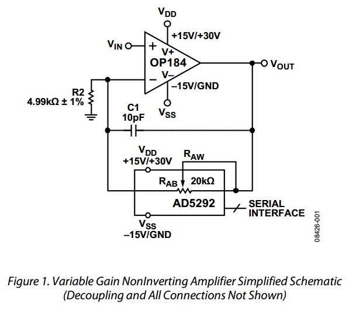
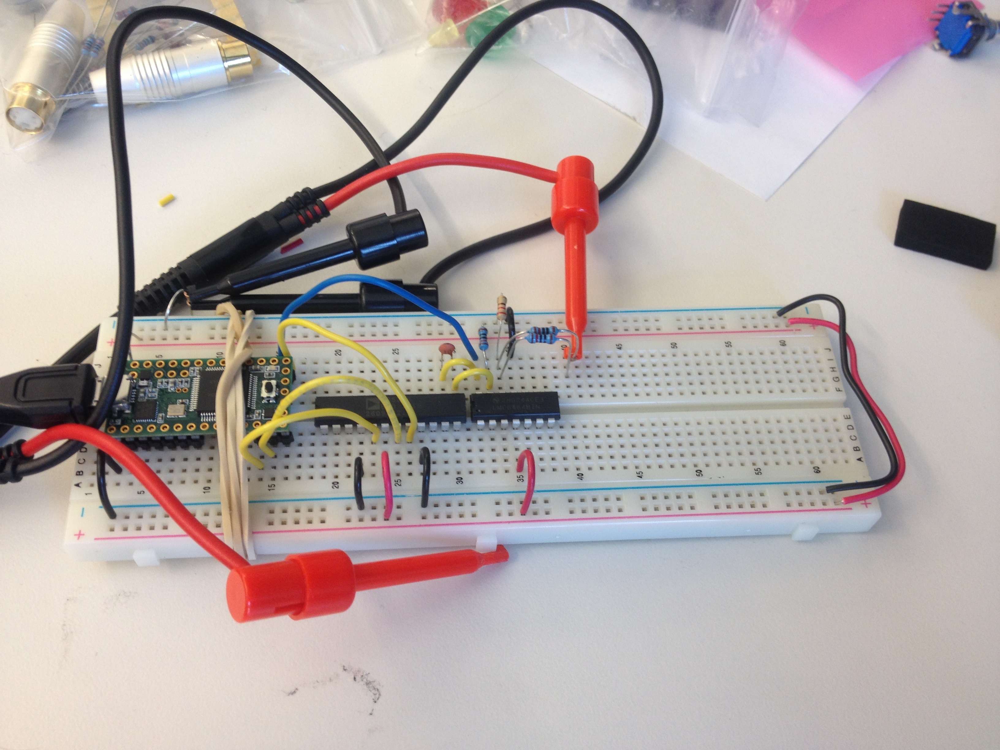

Variable Gain Amplifier with SPI Interface
A major problem with triggering off of the fetal blood pressures is that the signal coming from the transducers is relatively small compared to the full scale of the pressure measurement instrument (numbers given below in specifications). To resolve this issue, I considered three possible solutions:
- Use an analog potentiometer in the gain feedback path, which the experimenter can adjust by turning a knob.
- Use a digital potentiometer in the feedback path which the experimenter can adjust by pressing increment and decrement buttons.
- Use a digital potentiometer in the gain feedback path which is automatically adjusted by the microcontroller whenever the signal level is out of range.
After due consideration, I opted to use strategy #3. Having the microcontroller perform the adjustment is advantageous because the microntroller can adjust the gain smoothly and gradually over a period of one minute or more, which will ensure that the gain adjustments do not interfere with the constantly running triggering algorithm.
Specifications
- The Samba Sensor can measure pressures from -38 mmHg to 263 mmHg, which is linearly mapped to a 0-5V output
- Fetal lambs have a typical blood pressure of 70/30 mmHg, which is the best approximation we have for a fetal Yorkshire pig
With the assumed blood pressure range of the pig, only 0.66V of the 5V range will be used for the signal ((70-30)/(263 - (-38))) * 5V = 0.66V.
Based on these estimates I calculated the minimum possible gain range to be 1x - 8x. I choose to use an upper gain value of 11x in my design, so that it will work optimally even with lower than expected blood pressures.
Building Blocks
I opted to use this whitepaper as the basis of my design: CN0112: Variable Gain Noninverting Amplifier Using the AD5292 Digital Potentiometer and the OP184 Op Amp.

I chose this circuit because it offered an appropriate gain adjustment range, and because the teensy has an excellent high speed SPI library for sending values to the digital potentiometer.
I started by patching up a simple non-inverting amplifier, on a breadboard like so:

This amplifier had an adjustable gain range of 1.1 V/V to 11 V/V with 256 subdivisions. This is more than enough gain to amplify a 70/30 mmHg signal to the full range of the ADC.
With that all patched up and working, all that remains is to write an efficient algorithm for bringing the signal into full range in real time.
The algorithm development is documented in this post: